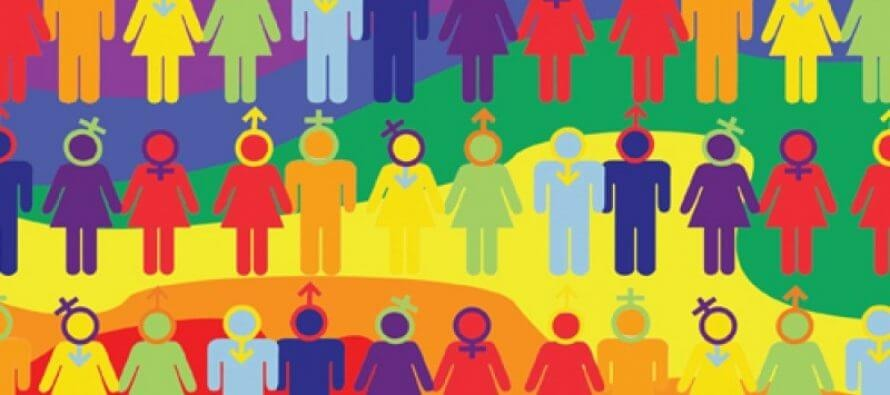
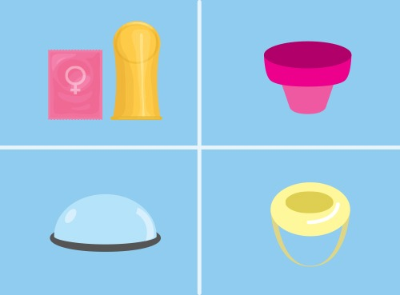
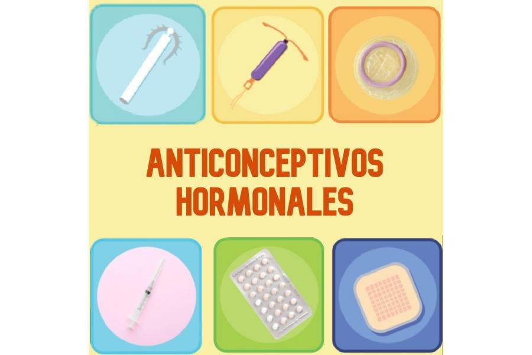
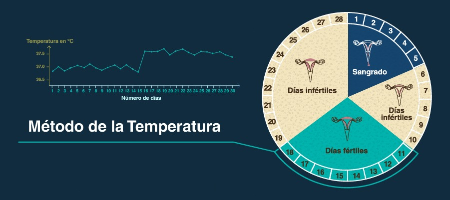

Unidad 5: La educación sexual integral.
ESI Introducción
La Educación Sexual Integral más comúnmente conocida como ESI fue establecida como un derecho a través de la Ley 26150 del año 2006. Es un enfoque educativo que aborda aspectos relacionados con la sexualidad de manera integral, con contenidos adecuados a la edad de las alumnas y los alumnos, considerando aspectos biológicos, psicológicos, sociales y afectivos. El objetivo principal de la ESI es proporcionar a las personas herramientas y conocimientos necesarios para comprender y vivir su sexualidad de manera saludable, respetuosa y consciente.
La Educación Sexual Integral tiene como objetivos Promover actitudes responsables ante la sexualidad, prevenir enfermedades de transmisión sexual, procurar la igualdad de trato y oportunidades para todas las identidades de género y orientaciones sexuales, así como también orientar hacia el acceso a los recursos de salud pública entre otras cosas.
- El ejercicio de los derechos
- El enfoque de género
- El Respeto por la diversidad
- La valoración de la afectividad
- El cuidado del cuerpo
Derechos sexuales y reproductivos
Los derechos sexuales: hacen referencia a la capacidad de tomar decisiones sobre cuándo, cómo y con quién tener relaciones sexuales. Se trata de vivir la sexualidad sin presiones ni violencia, y de que se respete la orientación sexual y la identidad de género sin discriminación. Además, implica acceder a información sobre cuidado personal y disfrutar del cuerpo e intimidad con otras personas. Todos tenemos el derecho de disfrutar de una vida sexual elegida libremente, sin violencia, riesgos ni discriminación.
Derechos de reproducción: Todas las personas tienen el derecho de tomar decisiones independientes y sin discriminación sobre si desean o no tener hijos, con quién, cuántos y con qué frecuencia. También tienen derecho a recibir información sobre los distintos métodos anticonceptivos y a acceder de forma gratuita al método que elijan.
- Disfrutar una vida sexual saludable y placentera, sin presiones ni violencias.
- Acceder a información y atención, con respeto y confidencialidad
- Recibir atención gratuita e integral de la salud sexual y la salud reproductiva
- Acceder a la interrupción del embarazo (IVE/ILE)
- Vivir la identidad de género y la orientación sexual libremente.
- Elegir si tener o no hijas/os, con quién, cuántas/os y cuándo tenerlas/os.
- Elegir y recibir métodos anticonceptivos de manera gratuita en hospitales, centros de salud, obras sociales y prepagas.
- Acceder a tratamientos de reproducción médicamente asistida.
- Acceder a los tratamientos para modificación corporal de acuerdo a la ley de identidad de género.
Perspectiva de género
La perspectiva de género es un enfoque que busca analizar las relaciones de poder y las desigualdades entre hombres y mujeres, así como las construcciones sociales y culturales que influyen en la construcción de las identidades de género. Este enfoque busca visibilizar y cuestionar las normas y estereotipos de género que limitan y discriminan a las personas en función de su sexo o género, además de reconocer que las experiencias, roles y oportunidades de las personas están fuertemente influenciados por las expectativas culturales y sociales asociadas con el género
Rol del Hombre:
David Gilmore (1994) establece cuatro requerimientos o mandatos con
los cuales es necesario cumplir por parte de los hombres para estar más cerca de ese ideal de
masculinidad o masculinidad hegemónica.
- Ser Proveedor: El hombre tiene que ser el principal sustento económico de su grupo familiar, esto implica tener que trabajar muchas horas fuera del ámbito doméstico, y, por lo tanto, delegar acciones, como el trabajo doméstico y el cuidado de los hijos en otros miembros de la familia.
- Ser Protector: Los hombres sienten el deber de cuidar y controlar a otras personas que ellos vean indefensas o débiles.
- Ser Procreador: Este mandato demanda que hombres deban estar siempre preparados para la conquista y mostrarse siempre dispuestos a las relaciones sexuales.
- Ser Autosuficiente: Esto implica que desde niños son más estimulados para tomar decisiones por sí mismos y tener mayores márgenes de libertad. A su vez deben estar dispuestos a aceptar los desafíos que se les impongan, asumir lugares de liderazgos como clave para alcanzar el éxito personal.
Rol de la Mujer:
Al igual que al hombre la sociedad a asignado muchos roles y
mandatos a la mujer a lo largo de la historia. Durante muchos años las mujeres solo podían trabajar
de
ama de casa o trabajos de esa índole (limpieza, cocina, cuidado, etc.) ya que no podían acceder a
una
educación y mucho menos a un mercado laboral más amplio que ese, y aunque en el paso del tiempo esto
ha
cambiado gracias a movimientos como el feminismo, muchas veces la mujer elige o se ve obligada a
seguir
alguno de estos roles:
- Ama de casa: Hoy en día se sigue esperando de la mujer que su rol en la familia sea el de ama de casa y que haga todas las tareas domésticas sin ayuda.
- Madre y Cuidadora: A pesar de los cambios en los roles de género, muchas mujeres continúan desempeñando el papel tradicional de madre y cuidadora en el hogar, brindando ayuda a sus hijos, llevándolas al colegio, etc.
- Educadora Doméstica: Las mujeres siguen teniendo un papel central en la transmisión de conocimientos y habilidades dentro del hogar, enseñando a los niños habilidades prácticas y valores.
Respeto por la diversidad
El eje de respeto a la diversidad en la Educación Sexual Integral (ESI) se centra en promover el reconocimiento y la aceptación de la diversidad en todas sus formas, incluyendo aspectos como la orientación sexual, la identidad de género, la diversidad étnica y cultural, las discapacidades, entre otros. Este eje busca fomentar una comprensión respetuosa y no discriminatoria de las diferencias individuales y grupales, contribuyendo a la construcción de sociedades más inclusivas y equitativas.

- Diversidad de Género: Reconoce y respeta la variedad de identidades y expresiones de género. Promueve la comprensión de que la identidad de género no se limita a la dicotomía tradicional hombre o mujer y que las personas pueden identificarse en un espectro diverso.
- Orientación Sexual: Aborda la diversidad de orientaciones sexuales, destacando que la atracción emocional, romántica y/o sexual puede manifestarse de diversas maneras. Fomenta el respeto hacia las personas con diferentes orientaciones sexuales, combatiendo la discriminación por motivos de orientación sexual.
- Diversidad Étnica y Cultural: Reconoce y valora la riqueza de las diferentes culturas y etnias presentes en una sociedad. Busca superar estereotipos y prejuicios relacionados con la identidad cultural y étnica, promoviendo la comprensión y el respeto mutuo.
- Discapacidad: Considera la diversidad de habilidades y discapacidades, fomentando un enfoque inclusivo que reconozca y valore las contribuciones de las personas con discapacidad. Busca eliminar barreras y estigmatizaciones asociadas a la discapacidad.
- Religiosa y de Pensamiento: Promueve el respeto por la diversidad de creencias religiosas y de pensamiento, fomentando la tolerancia y la convivencia pacífica entre personas con diferentes convicciones.
- Diversidad Familiar: Reconoce y respeta la diversidad de estructuras familiares, incluyendo familias monoparentales, familias homoparentales, entre otras. Fomenta una comprensión amplia de lo que constituye una familia, basada en el amor y el cuidado.
Eje – Valorar la afectividad
El eje de "valorar la afectividad" se centra en promover una comprensión positiva y saludable de las emociones y las relaciones afectivas. Este componente busca desarrollar en los estudiantes habilidades para comprender, expresar y gestionar sus emociones, así como fomentar el respeto y la empatía en las relaciones interpersonales. Algunos puntos a destacar de este eje son:
- Fortalecer la autoestima: Esto implica comprender nuestra identidad, reconocer nuestras cualidades positivas, identificar áreas de mejora y trabajar hacia la mejor versión de nosotros mismos. Es fundamental aceptarnos en el presente, valorando que merecemos respeto, amor y cuidado, mientras aspiramos a crecer y evolucionar.
- Pensar cómo queremos vivir nuestras relaciones: tener en claro qué esperamos, como nos gustaría que nos traten, como nos gustaría ser amados/as, cómo nos gustaría amar, entre tantas otras cuestiones a reflexionar. ¿Qué esperamos del amor y de las relaciones? ¿Quisiéramos a futuro formar nuestras propias familias?/li>
- Crecer en autonomía: Saber estar bien con nosotros mismos y saber estar solos es algo muy necesario para las relaciones saludables. Va de la mano de la autoestima, de ampliar el espacio interior y de saber qué esperamos de la vida: cuanta más seguridad tengamos acerca de lo que valemos y de lo que queremos, más capacidad tendremos de estar solos esperando el momento y la persona adecuados.
- Crecer en la capacidad de amar de manera saludable: El amor, como decisión consciente de querer hacerle bien a la persona que amamos, requiere de distintas actitudes personales, que se desarrollan can el tiempo y en vistas al buen trato, a la solidaridad, al proyecto compartida la lealtad, etc.
Relaciones saludables y relaciones tóxicas:
Se basa en la promoción de relaciones afectivas saludables en la Educación Sexual Integral no solo aborda el aspecto romántico o sexual, sino que también se enfoca en la construcción de una base sólida de respeto, comunicación y apoyo emocional que contribuye al bienestar general de las personas involucradas.
- Cuando nos permite ser nosotros mismos, cuando sentimos que podernos decir o hacer lo que nos parece lo más adecuado delante de esa o esas personas.
- Cuando nos sentimos libres delante de quienes nos rodean.
- Cuando hay respeto y dignidad por las 2 partes.
- Cuando ambos sacrifican algo y reciben otra cosa a cambio.
Lógicamente una relación saludable no significa que no existan los conflictos ciertamente, los conflictos son parte de la vida y tan presentes en cualquier relación entre personas. Pero en una relación saludable, los conflictos se pueden dialogar y sobrellevar con serenidad y apertura. A diferencia de quienes se ven involucrados en una relación tóxica no logran ser plenos ni felices, pero no siempre se dan cuenta de esta situación. Si forman parte de esa relación es porque, de alguna forma, obtienen algo que les hace sentir bien, y no alcanzan a percibir el daño profundo que eso les causa. Incluso aunque muchas personas se lo adviertan.
El cuidado del cuerpo
A lo largo de la historia, la percepción y vivencia del cuerpo han estado intrínsecamente ligadas al contexto político, económico, social, cultural y las creencias de cada época. Más allá de su dimensión biológica, el cuerpo es un ente moldeado por significados y valoraciones sociales. Las experiencias infantiles, marcadas por miradas, afectos y violencias, dejan una impronta duradera en la relación con el propio cuerpo. La influencia de la escuela y otras instituciones en la construcción de la imagen corporal a menudo se ve afectada por mensajes contradictorios. Paralelamente, los medios de comunicación y el consumismo modelan las percepciones del cuerpo al establecer estándares de belleza y generar deseos.
En este complejo panorama, la Educación Sexual Integral (ESI) asume un papel esencial al buscar fomentar una comprensión integral de la salud, considerando aspectos físicos, psicológicos y sociales. Enfocándose en el reconocimiento del cuerpo sexuado y el fortalecimiento de la autoestima, la ESI tiene como objetivo empoderar a niños y niñas para que tomen decisiones informadas sobre su salud, incluyendo la sexual y reproductiva. Esto implica promover una vivencia de la sexualidad libre de coacción, violencia y discriminación.
- Reconocer que el cuerpo sexuado y la salud no abarcan solo la dimensión biológica.
- Reflexionar críticamente sobre las representaciones sobre el cuerpo y la salud presentes en la escuela y la sociedad.
- Trabajar el cuerpo desde distintas disciplinas, como el arte, la educación física, los medios de comunicación, etc.
- Abordar la salud desde un enfoque que enfatice la salud como derecho.
- Problematizar y reflexionar sobre los estereotipos de belleza para varones y mujeres.
- Propiciar el (auto) cuidado del cuerpo y la promoción de la salud.
Estas metas buscan cultivar una conciencia crítica, promover la diversidad de perspectivas y fomentar el respeto por la individualidad y la autonomía en el ámbito de la salud y la sexualidad.
Métodos anticonceptivos – Con barrera
Los métodos anticonceptivos con barrera son aquellos que impiden físicamente que los espermatozoides lleguen al óvulo, evitando así la fertilización. Estos métodos son una opción eficaz para prevenir el embarazo y, en algunos casos, también ayudan a prevenir la transmisión de enfermedades de transmisión sexual (ETS). Los principales métodos anticonceptivos con barrera son:

Preservativo Masculino:
También conocido como preservativo, es una funda delgada
hecha de látex, poliuretano o poli isopreno que se coloca sobre el pene erecto. El condón crea una
barrera física que impide que los espermatozoides entren en la vagina. Este debe ser colocado antes del
ingreso del pene a la vagina. Además, previene la transmisión de ETS.
Preservativo Femenino:
El condón femenino es una funda delgada, el cual cuenta con
2 anillos, uno en cada extremo y uno se coloca dentro de la vagina antes del acto sexual mientras que el
otro rodea los labios menores. Este actúa como barrera para prevenir la entrada de espermatozoides y
proteger contra algunas ETS.
Diafragma:
Es un dispositivo de goma o silicona que se coloca dentro de la vagina
antes del acto sexual para cubrir el cuello uterino. Funciona bloqueando el paso de los espermatozoides
hacia el útero. Para aumentar su eficacia, se usa junto con un espermicida.
Capuchón Cervical:
Similar al diafragma, es un dispositivo de goma o silicona que
se coloca sobre el cuello uterino para evitar que los espermatozoides ingresen al útero. También se
utiliza en combinación con un espermicida.
Esponja Anticonceptiva:
Es una esponja suave y redonda impregnada con un
espermicida que se coloca en el cuello uterino antes del acto sexual. La esponja actúa como barrera y
también libera sustancias que inactivan los espermatozoides.
Espermicidas:
Sustancias químicas que se encuentran en diversas formas, como
cremas, geles, supositorios o espumas, y se aplican en la vagina antes del acto sexual. Los espermicidas
matan o incapacitan a los espermatozoides, actuando como una barrera química.
Métodos anticonceptivos – Sin barrera – No hormonal
DIU (Dispositivo Intra Uterino)
El DIU es un método anticonceptivo reversible y de
larga duración que se coloca dentro del útero para prevenir el embarazo. Éste está hecho de plástico y
tiene alambre de cobre alrededor de su brazo vertical. El cobre actúa como espermicida, inhibiendo la
movilidad de los espermatozoides y previniendo la fertilización del óvulo. Además, el cobre también
afecta la capacidad del óvulo fertilizado para implantarse en el revestimiento del útero. El DIU debe
ser colocado por un profesional y puede durar entre 2 y 3 años.
Métodos anticonceptivos – Sin barrera – Hormonales
Los métodos anticonceptivos hormonales utilizan hormonas sintéticas para prevenir el embarazo al interferir con el proceso natural de ovulación o cambiar el moco cervical para dificultar el paso de los espermatozoides. Aquí tienes algunos de los métodos anticonceptivos hormonales más comunes: Los métodos anticonceptivos hormonales emplean hormonas sintéticas con el fin de evitar el embarazo al intervenir en el proceso natural de ovulación o alterar el moco cervical para dificultar el avance de los espermatozoides. Esto son los métodos anticonceptivos hormonales más conocidos:

Píldoras Anticonceptivas:
Las píldoras anticonceptivas contienen hormonas
(comúnmente estrógeno y progestina o solo progestina) que se toman diariamente. Estas hormonas inhiben
la ovulación y espesan el moco cervical, dificultando que los espermatozoides alcancen el óvulo.
Parches Anticonceptivos:
Son parches delgados que se adhieren a la piel y liberan
hormonas (estrógeno y progestina) a través de la epidermis. Se cambian semanalmente, y su función es
similar a la de las píldoras anticonceptivas.
Anillo Vaginal:
Este es un anillo flexible que se inserta en la vagina y libera
hormonas (estrógeno y progestina). Se deja en su lugar durante tres semanas y se retira durante la
semana de descanso.
Inyecciones Anticonceptivas:
Las inyecciones anticonceptivas contienen progestina y
se administran aproximadamente cada tres meses. Inhiben la ovulación y espesan el moco cervical.
Implante Subdérmico:
Es un pequeño dispositivo flexible del tamaño de un fósforo
que se coloca debajo de la piel del brazo. Libera progestina para prevenir la ovulación y cambiar el
moco cervical. Puede proporcionar anticoncepción eficaz durante varios años.
Dispositivo Intrauterino Hormonal (DIU Hormonal):
Además del DIU de cobre, hay un
DIU hormonal que libera progestina directamente en el útero. Este método es eficaz durante varios años.
Estos métodos anticonceptivos hormonales son altamente efectivos cuando se utilizan correctamente. Sin embargo, es esencial hablar con un profesional de la salud para encontrar el método más adecuado según la salud y las necesidades individuales, así como para comprender los posibles efectos secundarios y riesgos asociados. Además, los métodos hormonales no protegen contra las enfermedades de transmisión sexual, por lo que el uso de preservativos también puede ser recomendado en situaciones de riesgo.
Métodos Anticonceptivos Naturales
- Son reversibles
- Son Inseguros
- Ninguno impide el contagio de ETS
El comportamiento rebelde de los adolescentes es la consecuencia de la búsqueda de independencia. Necesitan distanciarse de la relación de dependencia y protección que han tenido con sus padres para adentrarse en el mundo adulto y encontrar su identidad personal.
Método del Calendario o Ritmo:
La presunción de fertilidad en este método se basa
en la idea de que la ovulación generalmente ocurre entre el día 14 y 16 del ciclo menstrual. Se
establece que la vida del ovocito es de 24 a 48 horas y la del espermatozoide puede ser de hasta 92
horas. Por lo tanto, evitando las relaciones sexuales 5 días antes y 2 días después de la ovulación, se
espera reducir las posibilidades de embarazo. Sin embargo, la efectividad de este método disminuye en
mujeres con ciclos menstruales irregulares. En ciclos regulares de 28 días, se sugiere evitar las
relaciones sexuales entre el día 9 y 17 del ciclo. Se recomienda llevar un registro menstrual durante al
menos 6 meses para determinar la regularidad y seguridad del método.
Método de la Temperatura Basal:
Este método se centra en predecir la ovulación
mediante cambios en la temperatura corporal. Se aconseja tomar la temperatura cada mañana, justo al
despertarse y antes de cualquier actividad. La temperatura suele disminuir brevemente justo antes de la
ovulación y aumentar después, permaneciendo alta hasta la siguiente menstruación después de la
ovulación. Cuando la temperatura se mantiene alta durante tres días consecutivos, se considera que el
periodo fértil ha terminado. La desventaja de este método es que diversos factores, como enfermedades,
falta de sueño, consumo de drogas o alcohol, pueden afectar la temperatura basal.

Método del Moco Cervical (Billings):
Este método se basa en la observación de
cambios en el moco cervical a lo largo del ciclo menstrual. Después de la menstruación, hay un periodo
seco de 2 a 3 días, seguido por la aparición de un moco cervical blanco y pegajoso que se vuelve más
elástico y transparente. El último día con estas características se conoce como el día cúspide del moco.
A partir del cuarto día después de este día cúspide, comienza el periodo considerado infértil. Existen
programas de entrenamiento para mejorar la precisión en la observación de estos cambios en el moco
cervical.
Coito Interrumpido
También conocido como “coitus interruptus” o método del retiro.
Consiste en retirar el pene de la vagina antes de la eyaculación. Es posible que este método de control
de la natalidad sea muy utilizado ya que es gratis, está disponible y siempre es una opción para
prevenir el contacto entre el óvulo y los espermatozoides, reduciendo así la posibilidad de un embarazo
indeseado. Dependiendo de cuán bien se conoce a sí mismo la pareja masculina y cuánto se pueda
controlar. Este método no protege contra las infecciones de transmisión sexual, incluyendo el VIH/SIDA.
*Es importante destacar que los métodos anticonceptivos naturales requieren un compromiso significativo, una observación cuidadosa y la capacitación adecuada para ser efectivos por lo que son más adecuados para parejas que están dispuestas a comprometerse y que tienen una buena comprensión del ciclo menstrual. Además, cabe aclarar que estos métodos son muy inseguros ya que la eficacia de estos métodos puede verse afectada por la variabilidad individual y las circunstancias específicas, como la irregularidad del ciclo menstrual y es mucho más recomendable el uso de los métodos anteriormente mencionados.